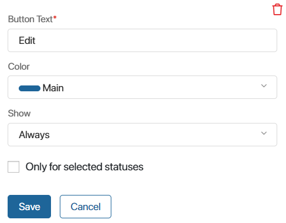
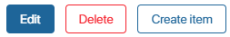
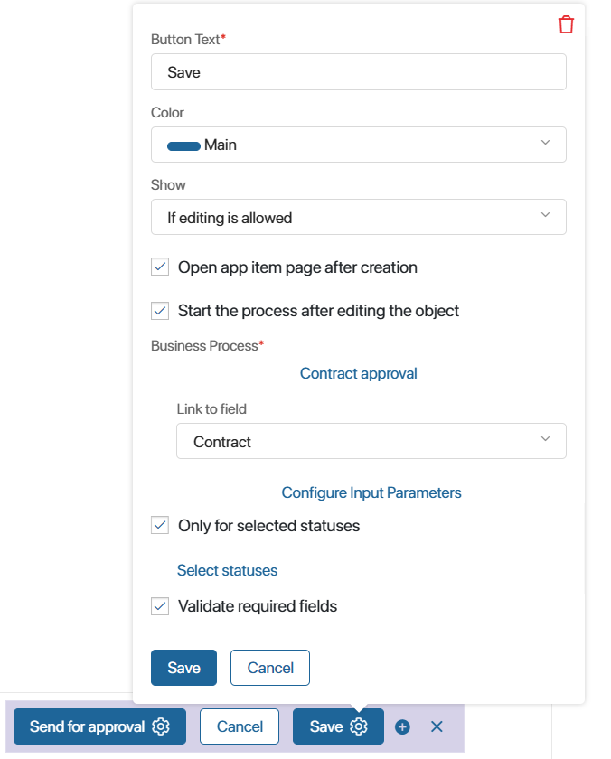
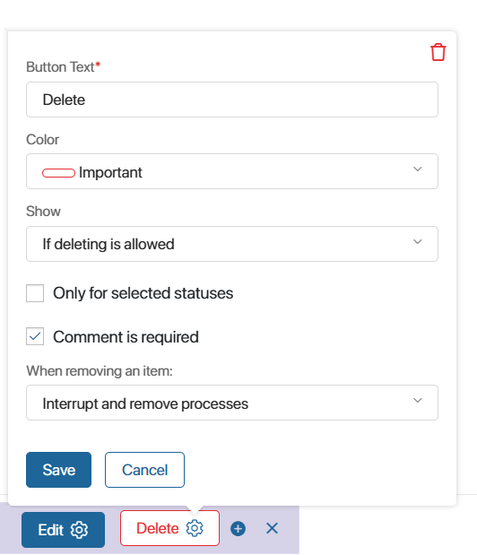
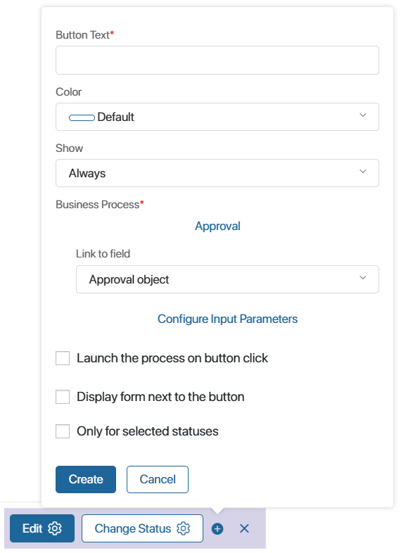
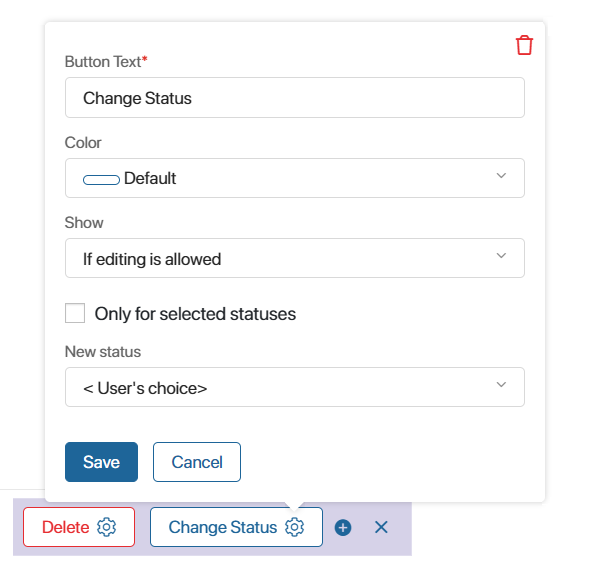
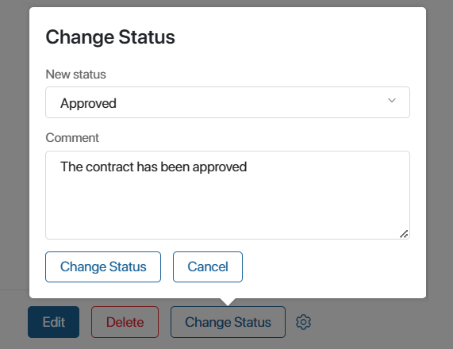
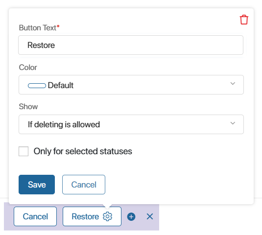

The system provides buttons located on app pages, allowing users to edit and delete items, initiate business processes, etc.
Buttons that can be added to pages include: Save, Edit, Delete, Start Process, Change Status, and Restore.
When creating or editing a button, set its appearance, configure its operation, and determine visibility based on user permissions. To do this, fill in the fields in the button's settings. Some of them are common for all buttons, others are specific to its type.
General settings
Regardless of the button type, you need to specify:

- Button Text*. Specify a name of the button on the item page.
- Color. Select the color of the button’s background or outline.

- Always. The button is displayed to all users who can open the item page, that is, have the creation, view, or editing permissions.
- If editing is allowed. The button is only visible to users who have permissions to edit app items. This option is available only for edit and view pages.
- If deleting is allowed. the button is only visible to users who have permissions to delete app items. This option is available only for view pages.
начало внимание
The system administrator always has full access to an app, its folders, and items. Access restrictions are never applied to the administrator.
конец внимание
- Only for selected statuses. The button will be displayed only on pages of items in statuses that you select. This option is available only for the view form of an app with configured statuses.
Save button
By default, this button is placed on the item creation and editing page. It cannot be removed.
On the creation page, the button is automatically linked to the first business process created for the app. This can be changed in the button's settings or on the app's process page. For more details, read the Business process associated with an app article.
You can add additional Save buttons to the creation and editing pages. For instance, these buttons can enable users to save a draft record without filling out required fields or to initiate a business process different from the one linked to the app.
In addition to the general settings, the following options are available for the Save button:

- Open app item page after creation. Check this box to display the page of a new item immediately. The option is available only on the creation form.
- Start a process after editing the object. Enable this option, click Select Process, and specify the system process that will be initiated for the item upon saving.
- Link to field. Specify in which context variable of the business process the saved app item will be written to.
- Configure Input Parameters. Pass values from item properties into process context variables.
- Validate required fields. This option is only available for a Save button added to the page by the administrator. Disable it to disable the checking of required fields when saving an item. This allows creating item drafts and adding missing data later. Note that if a custom validation function is set for the form, the configured field checks will still be executed.
Edit button
This button is used only on the item view page. It allows moving to the editing mode.
You can remove the default button or create a new one.
The Edit button only has general settings.
Delete button
The Delete button can only be added to the view page of an app.
When an item is deleted, all instances of business processes that involve it are interrupted.
Apart from the general settings, there are the following options available for the Delete button:

- Comment is required. If you check this box, users will be required to leave a comment when deleting an item. It will be shown in the associated activity stream of the deleted item.
- When removing an item. With this option you can define where deleted items will be displayed. It is only available for apps in which statuses are configured, and at least one of them is final. Otherwise, a deleted item is always hidden from the page and available via the Removed filter. Specify where you will be able to see deleted items:
- Interrupt and remove processes. The deleted item is hidden from the app page. To view it, use the Removed filter in the search by parameters.
- Interrupt processes and set status. The deleted item is assigned the specified status, but not removed from the app page. Note that you can only select a final status.
Process start button
The button is added to the view page. It launches the selected business process.
Apart from the general settings, there are the following options available for this button type:

- Business Process*. Select a business process that will start when a user clicks this button.
- Link to field. Specify a process context variable that will store the app item.
- Configure Input Parameters. Select fields in the process context and corresponding fields in your app. When the process starts, the process fields will be pre‑filled with the data from the app fields.
- Launch the process on button click. Check this box if you don’t want the process start form configured in the start event to be shown. The process execution will start with the activity placed directly after the start event.
- Display form next to the button. Check this box if you want the process start form to be displayed in a pop-up above the button, not in a separate window.
- Form size. Select the size of the process start form.
Change status button
You can add the button to the view form of an app item with configured statuses.
Apart from the general settings, there is another option available for the Change Status button.

In the New status field, select the status that the item will be assigned when the user clicks the button. You can also choose the <User’s choice> option to allow the user to select any status created in the app.
The order in which statuses are supposed to change is not considered when changing the status using the button. It can be used even if the item has been assigned a final status.
When the user clicks the status change button, a window opens for adding a comment.

If a user leaves a comment, it is displayed in the associated activity stream of the item.
Restore button
You can use the Restore button to return deleted items to the app page and continue working with them.
The button can be added only to the page of a deleted app item. To create it, go to the search by parameters window and use the Removed filter. Click and item and add the button on its page.
The Restore button has only general settings.

Note that if there are statuses configured in the app, the restored item will be assigned the initial status. For example, the status of a restored deal will be New.